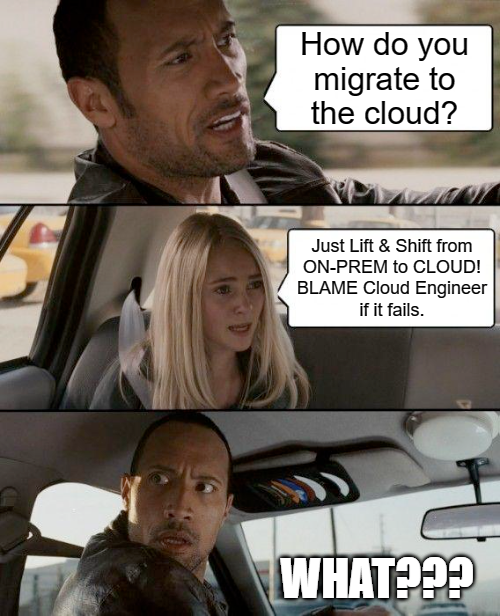
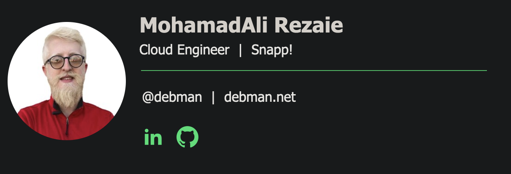

<!DOCTYPE html>
<html lang="en">
  <head>
    <meta charset="utf-8" />
    <meta name="viewport" content="width=device-width, initial-scale=1.0, maximum-scale=1.0, user-scalable=no" />

    <title></title>
    <link rel="stylesheet" href="dist/reveal.css" />
    <link rel="stylesheet" href="dist/theme/night.css" id="theme" />
    <link rel="stylesheet" href="css/vs2015.css" />
	<link rel="stylesheet" href="css/layout.css" />
	<link rel="stylesheet" href="plugin/customcontrols/style.css">


    <script defer src="dist/fontawesome/all.min.js"></script>

	<script type="text/javascript">
		var forgetPop = true;
		function onPopState(event) {
			if(forgetPop){
				forgetPop = false;
			} else {
				parent.postMessage(event.target.location.href, "app://obsidian.md");
			}
        }
		window.onpopstate = onPopState;
		window.onmessage = event => {
			if(event.data == "reload"){
				window.document.location.reload();
			}
			forgetPop = true;
		}

		function fitElements(){
			const itemsToFit = document.getElementsByClassName('fitText');
			for (const item in itemsToFit) {
				if (Object.hasOwnProperty.call(itemsToFit, item)) {
					var element = itemsToFit[item];
					fitElement(element,1, 1000);
					element.classList.remove('fitText');
				}
			}
		}

		function fitElement(element, start, end){

			let size = (end + start) / 2;
			element.style.fontSize = `${size}px`;

			if(Math.abs(start - end) < 1){
				while(element.scrollHeight > element.offsetHeight){
					size--;
					element.style.fontSize = `${size}px`;
				}
				return;
			}

			if(element.scrollHeight > element.offsetHeight){
				fitElement(element, start, size);
			} else {
				fitElement(element, size, end);
			}		
		}


		document.onreadystatechange = () => {
			fitElements();
			if (document.readyState === 'complete') {
				if (window.location.href.indexOf("?export") != -1){
					parent.postMessage(event.target.location.href, "app://obsidian.md");
				}
				if (window.location.href.indexOf("print-pdf") != -1){
					let stateCheck = setInterval(() => {
						clearInterval(stateCheck);
						window.print();
					}, 250);
				}
			}
	};


        </script>
  </head>
  <body>
    <div class="reveal">
      <div class="slides"><section  data-markdown><script type="text/template"><!-- .slide: class="drop" data-background-image="attachments/tech-road-bg.png" -->
<div class="" style="position: absolute; left: 0px; top: 0px; height: 700px; width: 960px; min-height: 700px; display: flex; flex-direction: column; align-items: center; justify-content: center" absolute="true">

#  Cloud Engineer
</div></script></section><section  data-markdown><script type="text/template"><!-- .slide: class="drop" data-background-image="attachments/tech-road-bg.png" -->
<div class="" style="position: absolute; left: 0px; top: 0px; height: 700px; width: 960px; min-height: 700px; display: flex; flex-direction: column; align-items: center; justify-content: center" absolute="true">

## History of 🌩️

- SysAdmin <!-- .element: class="fragment" -->
- DevOps <!-- .element: class="fragment" -->
- SRE <!-- .element: class="fragment" -->
- Cloud Engineer  <!-- .element: class="fragment highlight-cyan" -->

> Platform Engineer, Systems Engineer, Infrastructure Engineer, ...

 <!-- .element: class="fragment highlight-cyan" -->
</div></script></section><section  data-markdown><script type="text/template"><!-- .slide: class="drop" data-background-image="attachments/tech-road-bg.png" -->
<div class="" style="position: absolute; left: 0px; top: 0px; height: 700px; width: 960px; min-height: 700px; display: flex; flex-direction: column; align-items: center; justify-content: center" absolute="true">

## What is 🌩️?


 <!-- .element: class="fragment highlight-cyan" -->
</div></script></section><section  data-markdown><script type="text/template"><!-- .slide: class="drop" data-background-image="attachments/tech-road-bg.png" -->
<div class="" style="position: absolute; left: 0px; top: 0px; height: 700px; width: 960px; min-height: 700px; display: flex; flex-direction: column; align-items: center; justify-content: center" absolute="true">

## Service models

- Infrastructure / IaaS
  - Compute
  - Networking
  - Storage
- Platform / PaaS
- Service / SaaS

<div class="callout callout-color5">
<div class="callout-title">
<div class="callout-icon">

<i class="fas fa-exclamation-triangle" ></i>


</div>
<div class="callout-title-inner">

But what there is another SaaS ?!!

</div>
</div>
<div class="callout-content">

</div>
</div>
</div></script></section><section  data-markdown><script type="text/template"><!-- .slide: class="drop" data-background-image="attachments/tech-road-bg.png" -->
<div class="" style="position: absolute; left: 0px; top: 0px; height: 700px; width: 960px; min-height: 700px; display: flex; flex-direction: column; align-items: center; justify-content: center" absolute="true">

## We ❤️ as a Service
</div></script></section><section  data-markdown><script type="text/template"><!-- .slide: class="drop" data-background-image="attachments/tech-road-bg.png" -->
<div class="" style="position: absolute; left: 0px; top: 0px; height: 700px; width: 960px; min-height: 700px; display: flex; flex-direction: column; align-items: center; justify-content: center" absolute="true">

## Types

- Public Cloud
- Private Cloud
- Hybrid Cloud

<div class="callout callout-color2">
<div class="callout-title">
<div class="callout-icon">

<i class="fas fa-fire-alt" ></i>


</div>
<div class="callout-title-inner">

Where does AWS come from

</div>
</div>
<div class="callout-content">

</div>
</div>
</div></script></section><section  data-markdown><script type="text/template"><!-- .slide: class="drop" data-background-image="attachments/tech-road-bg.png" -->
<div class="" style="position: absolute; left: 0px; top: 0px; height: 700px; width: 960px; min-height: 700px; display: flex; flex-direction: column; align-items: center; justify-content: center" absolute="true">

## Roles and Responsibilities

A cloud engineer is a specialist who <mark>develops</mark> and <mark>maintains</mark> a company's cloud infrastructure, ensuring it remains efficient, <mark>scalable</mark>, and secure.
</div></script></section><section  data-markdown><script type="text/template"><!-- .slide: class="drop" data-background-image="attachments/tech-road-bg.png" -->
<div class="" style="position: absolute; left: 0px; top: 0px; height: 700px; width: 960px; min-height: 700px; display: flex; flex-direction: column; align-items: center; justify-content: center" absolute="true">

#### **1. Cloud Architecture Design**

- Service model (IaaS, PaaS, SaaS)
- Type (Private, Public, Hybrid, Multi Cloud)
- Providers (AWS, Arvan, ...)
- System Design (~~SPOF~~, Scaling, HA)
</div></script></section><section  data-markdown><script type="text/template"><!-- .slide: class="drop" data-background-image="attachments/tech-road-bg.png" -->
<div class="" style="position: absolute; left: 0px; top: 0px; height: 700px; width: 960px; min-height: 700px; display: flex; flex-direction: column; align-items: center; justify-content: center" absolute="true">


<!-- .slide: data-background-image="attachments/tech-road-bg.png" -->
</div></script></section><section  data-markdown><script type="text/template"><!-- .slide: class="drop" data-background-image="attachments/tech-road-bg.png" -->
<div class="" style="position: absolute; left: 0px; top: 0px; height: 700px; width: 960px; min-height: 700px; display: flex; flex-direction: column; align-items: center; justify-content: center" absolute="true">

## We ❤️ Scaling
</div></script></section><section  data-markdown><script type="text/template"><!-- .slide: class="drop" data-background-image="attachments/tech-road-bg.png" -->
<div class="" style="position: absolute; left: 0px; top: 0px; height: 700px; width: 960px; min-height: 700px; display: flex; flex-direction: column; align-items: center; justify-content: center" absolute="true">


<!-- .slide: data-background-image="attachments/tech-road-bg.png" -->
</div></script></section><section  data-markdown><script type="text/template"><!-- .slide: class="drop" data-background-image="attachments/tech-road-bg.png" -->
<div class="" style="position: absolute; left: 0px; top: 0px; height: 700px; width: 960px; min-height: 700px; display: flex; flex-direction: column; align-items: center; justify-content: center" absolute="true">

## You are not alone


</div></script></section><section  data-markdown><script type="text/template"><!-- .slide: class="drop" data-background-image="attachments/tech-road-bg.png" -->
<div class="" style="position: absolute; left: 0px; top: 0px; height: 700px; width: 960px; min-height: 700px; display: flex; flex-direction: column; align-items: center; justify-content: center" absolute="true">

#### **2. Implementation and Deployment**

- Deployment
- Migration from on-premises to cloud
- Automation and DevOps
- Security and Compliance
- Performance and Cost Optimization
</div></script></section><section  data-markdown><script type="text/template"><!-- .slide: class="drop" data-background-image="attachments/tech-road-bg.png" -->
<div class="" style="position: absolute; left: 0px; top: 0px; height: 700px; width: 960px; min-height: 700px; display: flex; flex-direction: column; align-items: center; justify-content: center" absolute="true">

#### **3. Troubleshooting and Support**


</div></script></section><section  data-markdown><script type="text/template"><!-- .slide: class="drop" data-background-image="attachments/tech-road-bg.png" -->
<div class="" style="position: absolute; left: 0px; top: 0px; height: 700px; width: 960px; min-height: 700px; display: flex; flex-direction: column; align-items: center; justify-content: center" absolute="true">

## Cloud, the `DARK` Side


</div></script></section><section  data-markdown><script type="text/template"><!-- .slide: class="drop" data-background-image="attachments/tech-road-bg.png" -->
<div class="" style="position: absolute; left: 0px; top: 0px; height: 700px; width: 960px; min-height: 700px; display: flex; flex-direction: column; align-items: center; justify-content: center" absolute="true">


</div></script></section><section  data-markdown><script type="text/template"><!-- .slide: class="drop" data-background-image="attachments/tech-road-bg.png" -->
<div class="" style="position: absolute; left: 0px; top: 0px; height: 700px; width: 960px; min-height: 700px; display: flex; flex-direction: column; align-items: center; justify-content: center" absolute="true">

## Roadmap

<div class="callout callout-color4">
<div class="callout-title">
<div class="callout-icon">

<i class="fas fa-question-circle" ></i>


</div>
<div class="callout-title-inner">

Why you are here !!

</div>
</div>
<div class="callout-content">

</div>
</div>

1. Develop relevant skills
2. Build hands-on experience
3. Earn a certification *(Really? 😕)*
4. What's next?
</div></script></section><section  data-markdown><script type="text/template"><!-- .slide: class="drop" data-background-image="attachments/tech-road-bg.png" -->
<div class="" style="position: absolute; left: 0px; top: 0px; height: 700px; width: 960px; min-height: 700px; display: flex; flex-direction: column; align-items: center; justify-content: center" absolute="true">

## Skills

<split left="4" right="3" gap="0">

- Operating Systems
- Networking
- Programming
- Platforms
- DevOps tools

more?  
Cloud Providers
System Design

</split>
</div></script></section><section  data-markdown><script type="text/template"><!-- .slide: class="drop" data-background-image="attachments/tech-road-bg.png" -->
<div class="" style="position: absolute; left: 0px; top: 0px; height: 700px; width: 960px; min-height: 700px; display: flex; flex-direction: column; align-items: center; justify-content: center" absolute="true">

## Hands-on experience
</div></script></section><section  data-markdown><script type="text/template"><!-- .slide: class="drop" data-background-image="attachments/tech-road-bg.png" -->
<div class="" style="position: absolute; left: 0px; top: 0px; height: 700px; width: 960px; min-height: 700px; display: flex; flex-direction: column; align-items: center; justify-content: center" absolute="true">

## What's next?

- Dig into interests
- Contribute to free software
- Community
- Tech Blogs
</div></script></section><section  data-markdown><script type="text/template"><!-- .slide: class="drop" data-background-image="attachments/tech-road-bg.png" -->
<div class="" style="position: absolute; left: 0px; top: 0px; height: 700px; width: 960px; min-height: 700px; display: flex; flex-direction: column; align-items: center; justify-content: center" absolute="true">

## Resources

- [کتاب لینوکس و زندگی - زندگی حرفه‌ای](https://linuxbook.ir/chapters/linux_as_a_job.html)
- [Developer Roadmaps](http://roadmap.sh/)
- [The 12-factor app](https://12factor.net/)
- [Cloud Native Computing Foundation (CNCF)](https://www.cncf.io/)
</div></script></section><section  data-markdown><script type="text/template"><!-- .slide: class="drop" data-background-image="attachments/tech-road-bg.png" -->
<div class="" style="position: absolute; left: 0px; top: 0px; height: 700px; width: 960px; min-height: 700px; display: flex; flex-direction: column; align-items: center; justify-content: center" absolute="true">

## Q&A

<div class="" style="position: absolute; left: 0%; top: 0%; height: 30%; width: 15%; display: flex; flex-direction: column; align-items: center; justify-content: center" >


</div>

<div class="" style="position: absolute; left: 0%; top: 50%; height: 50%; width: 40%; display: flex; flex-direction: column; align-items: center; justify-content: center" >



</div>
</div></script></section></div>
    </div>

    <script src="dist/reveal.js"></script>

    <script src="plugin/markdown/markdown.js"></script>
    <script src="plugin/highlight/highlight.js"></script>
    <script src="plugin/zoom/zoom.js"></script>
    <script src="plugin/notes/notes.js"></script>
    <script src="plugin/math/math.js"></script>
	<script src="plugin/mermaid/mermaid.js"></script>
	<script src="plugin/chart/chart.min.js"></script>
	<script src="plugin/chart/plugin.js"></script>
	<script src="plugin/customcontrols/plugin.js"></script>

    <script>
      function extend() {
        var target = {};
        for (var i = 0; i < arguments.length; i++) {
          var source = arguments[i];
          for (var key in source) {
            if (source.hasOwnProperty(key)) {
              target[key] = source[key];
            }
          }
        }
        return target;
      }

	  function isLight(color) {
		let hex = color.replace('#', '');

		// convert #fff => #ffffff
		if(hex.length == 3){
			hex = `${hex[0]}${hex[0]}${hex[1]}${hex[1]}${hex[2]}${hex[2]}`;
		}

		const c_r = parseInt(hex.substr(0, 2), 16);
		const c_g = parseInt(hex.substr(2, 2), 16);
		const c_b = parseInt(hex.substr(4, 2), 16);
		const brightness = ((c_r * 299) + (c_g * 587) + (c_b * 114)) / 1000;
		return brightness > 155;
	}

	var bgColor = getComputedStyle(document.documentElement).getPropertyValue('--r-background-color').trim();
	var isLight = isLight(bgColor);

	if(isLight){
		document.body.classList.add('has-light-background');
	} else {
		document.body.classList.add('has-dark-background');
	}

      // default options to init reveal.js
      var defaultOptions = {
        controls: true,
        progress: true,
        history: true,
        center: true,
        transition: 'default', // none/fade/slide/convex/concave/zoom
        plugins: [
          RevealMarkdown,
          RevealHighlight,
          RevealZoom,
          RevealNotes,
          RevealMath.MathJax3,
		  RevealMermaid,
		  RevealChart,
		  RevealCustomControls,
        ],


    	allottedTime: 120 * 1000,

		mathjax3: {
			mathjax: 'plugin/math/mathjax/tex-mml-chtml.js',
		},
		markdown: {
		  gfm: true,
		  mangle: true,
		  pedantic: false,
		  smartLists: false,
		  smartypants: false,
		},

		mermaid: {
			theme: isLight ? 'default' : 'dark',
		},

		customcontrols: {
			controls: [
			]
		},
      };

      // options from URL query string
      var queryOptions = Reveal().getQueryHash() || {};

      var options = extend(defaultOptions, {"width":960,"height":700,"margin":0,"controls":true,"progress":true,"slideNumber":true,"transition":"slide","transitionSpeed":"normal"}, queryOptions);
    </script>

    <script>
      Reveal.initialize(options);
    </script>
  </body>

  <!-- created with Advanced Slides -->
</html>
